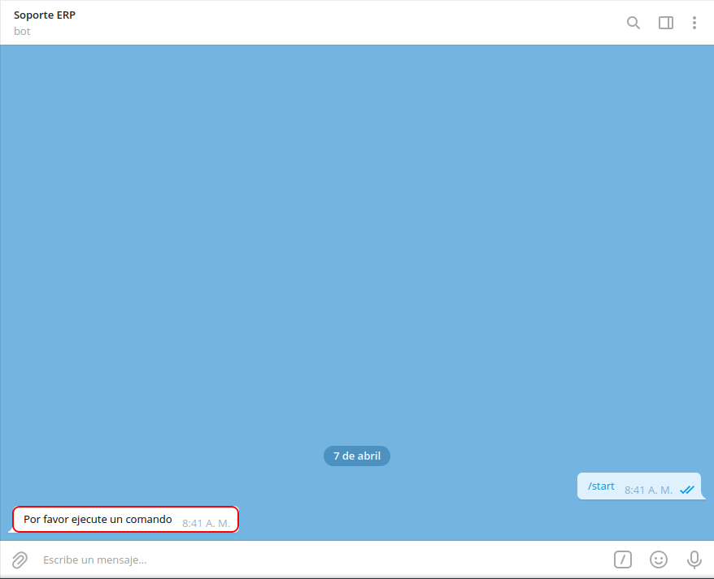

Consultar Tareas¶
Al abrir la conversación de Soporte ERP, seleccione la opción “INICIAR”, ubicada en la parte inferior de la conversación. Posteriormente podrá visualizar un mensaje donde el bot indica que Por favor ejecute un comando.

Imagen 1. Mensaje Principal “Por favor indique un comando”
Si desconoce el número de tarea que requiere consultar o simplemente requiere consultar todas las tareas que contiene el proyecto cuyos ticket se encuentran abiertos o cerrados. Puede realizar el siguiente procedimiento.
Se debe seleccionar el icono “/”, ubicado del lado derecho del campo “Mensaje”.
Imagen 2. Icono Barra “/”
Luego de seleccionar el icono “/”, podrá visualizar tres (3) opciones que representan diferentes comandos dentro de la conversación de Soporte ERP. Debe seleccionar la opción “/consultar_ticket”, para consultar los diferentes ticket del proyecto según lo requerido por el usuario.
Imagen 4. Opciones de Comandos a Ejecutar

Posteriormente, recibirá el mensaje “Por favor seleccione un criterio de búsqueda”, con la finalidad de filtrar la información por “Tickets Abiertos”, “Tickets Cerrados”, “Buscar por Estado” o “Asignado A”.
Imagen 5. Criterios de Búsqueda

Al seleccionar cualquiera de los criterios de búsqueda, recibirá los mensajes con la información de las tareas según lo requerido por el usuario.
Note
Para el presente ejmplo, fue seleccionado el criterio de búsqueda “Tickets Abiertos”.
Imagen 6. Resultado de la Consulta